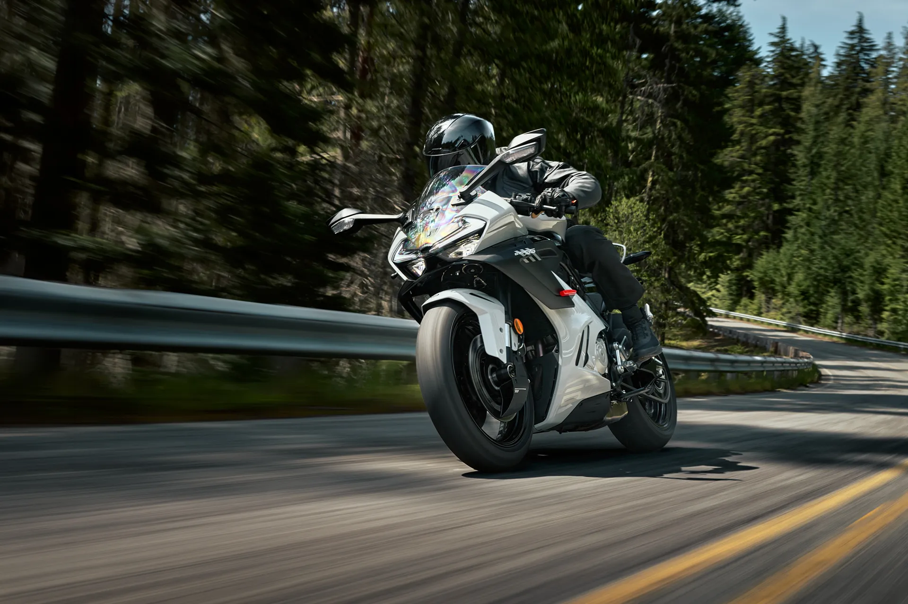
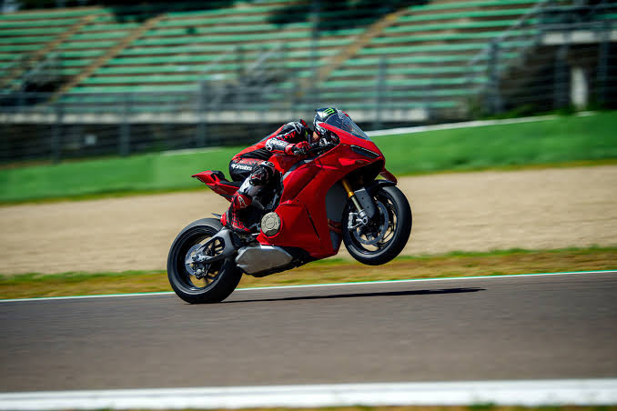
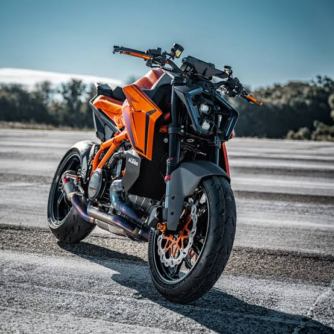
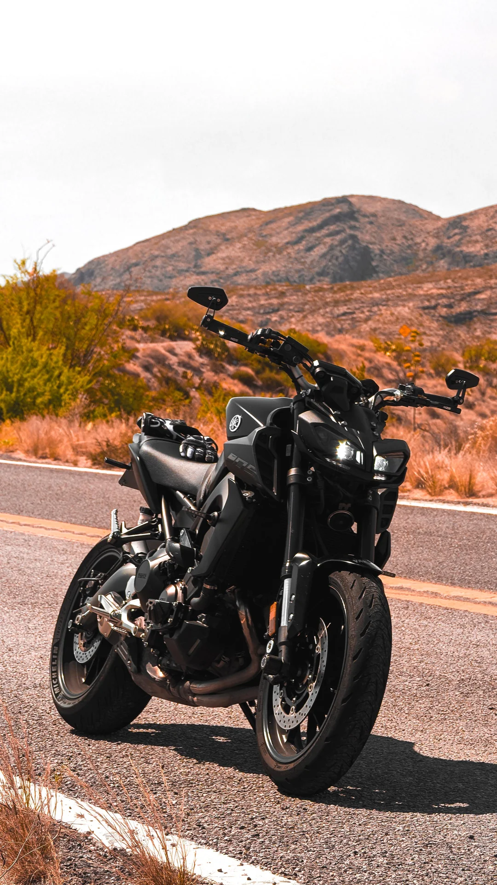
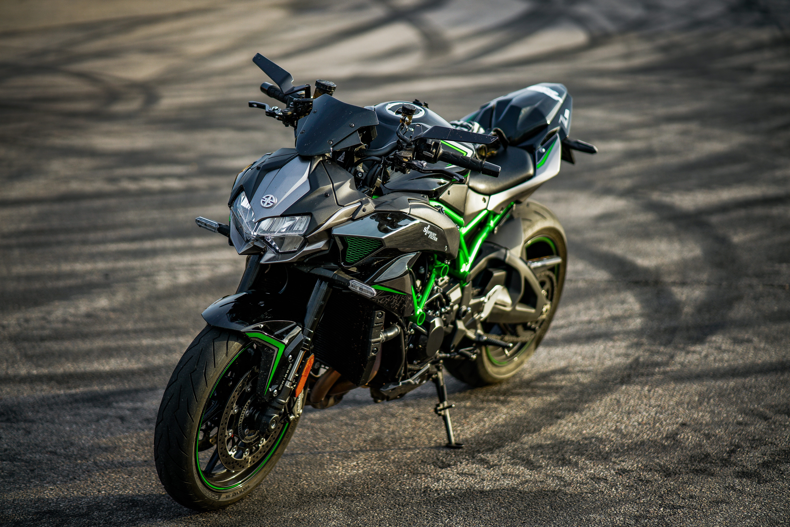

Street bikes are motorcycles designed specifically for riding on paved roads and highways. Unlike dirt bikes or off-road machines, they are optimized for handling, speed, comfort, and safety on asphalt.





The street bike category is actually a broad umbrella that includes several distinct styles, each built for a different vibe and purpose, but we’ll go over the two best ones of the best brands!
SPORT NAKED